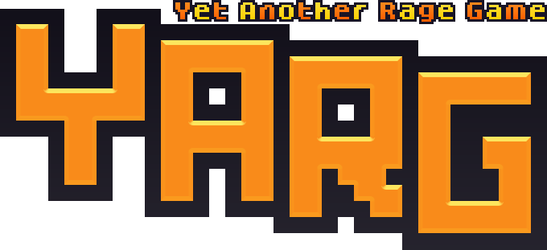

YARG is a one-screen rage platformer that wants you to succeed!
It includes 30+ levels, a built-in level editor, Rage Mode (can you beat the entire game in one go with just 6 lives?),
a story about AI and empathy, and so many secrets...
The game was released on September 16th 2022 on Steam and Itch.io!